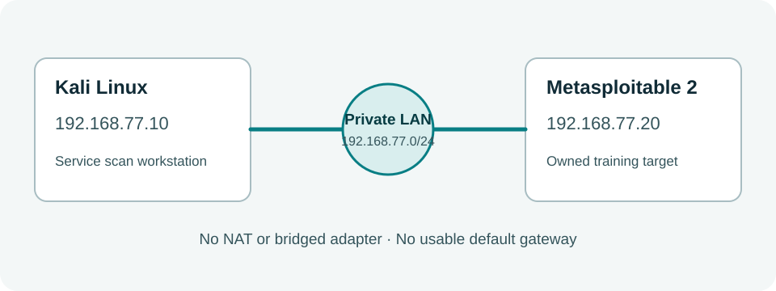
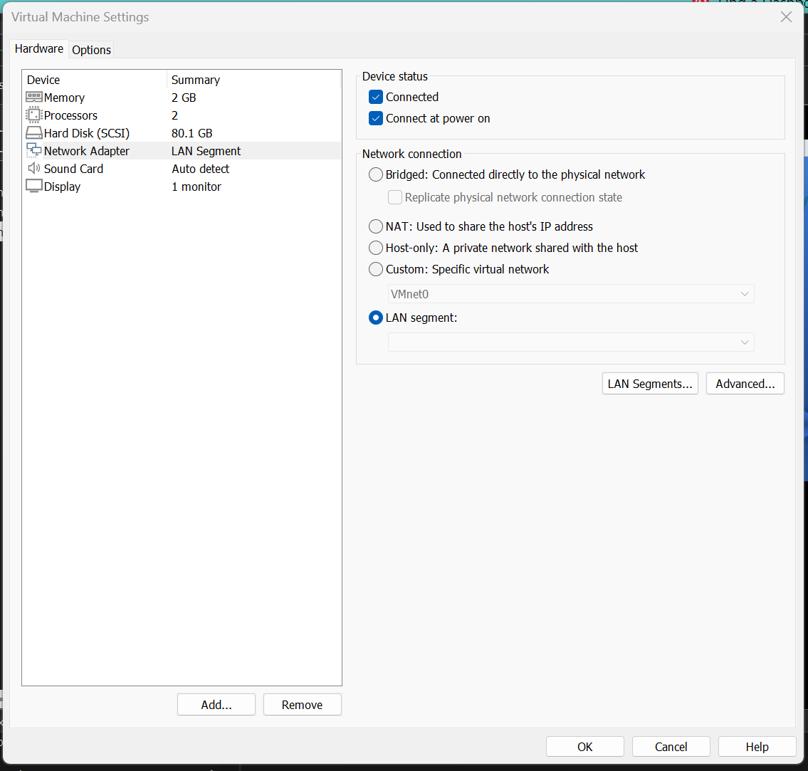
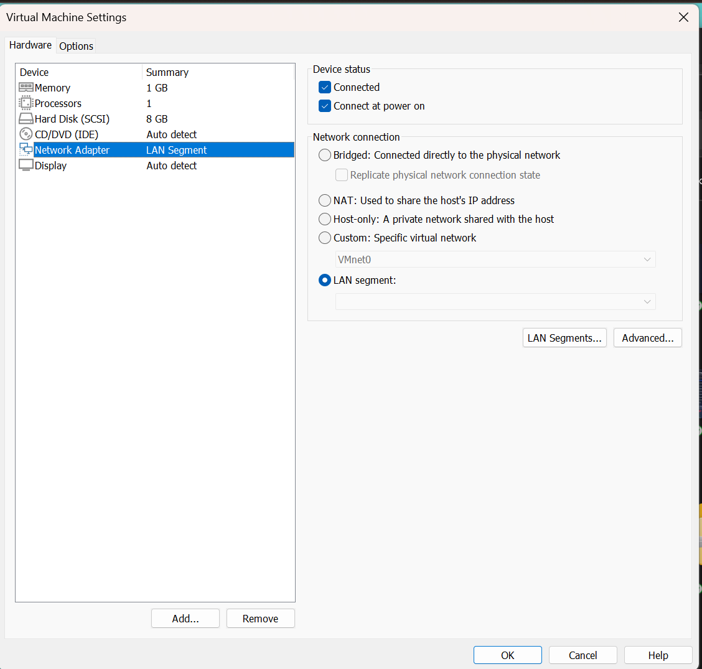
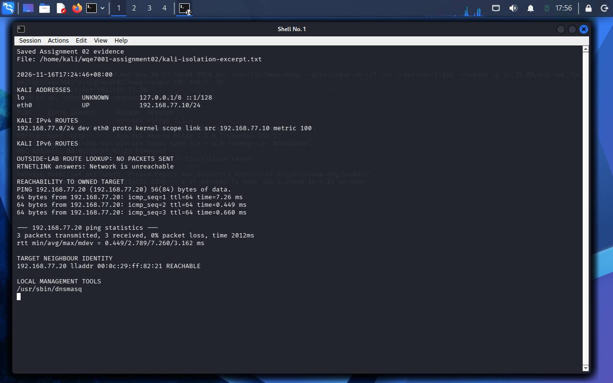

Project 01 · Environment and scope
Private virtual lab setup
I checked that Kali Linux could reach one owned training target while the lab had no usable route to an outside network.
Objective
Build a controlled environment for service discovery and record the network boundary before scanning. The project used only two virtual machines owned for training.
Environment and tools
VMware Workstation Pro 25H2 hosted Kali Linux 2026.3 at 192.168.77.10/24 and Metasploitable 2 at 192.168.77.20/24. Both enabled network adapters used one private LAN segment. The checks used VMware settings, guest address and route commands, a route lookup and ICMP ping.

Method
- Placed Kali and Metasploitable 2 on the same VMware LAN segment and checked that no second adapter was enabled.
- Set static addresses on the
192.168.77.0/24subnet without a default gateway. - Read each guest's addresses and routing table. Ran an outside-lab route lookup, which sends no probe packet.
- Pinged the owned target from Kali and Kali from the target to confirm local reachability.
Results and evidence
Kali's IPv4 table contained only the connected subnet and no IPv6 route. Its outside-lab lookup returned “Network is unreachable.” The target's IPv4 table likewise contained only the connected subnet; its apparent IPv6 default entries were reject routes. Each direction of the ping test received three of three replies. These checks support isolation for the recorded run, not a claim about every later VM state.






- Sanitised VMware adapter configuration excerpt
- Kali route and ping excerpt
- Target route and ping excerpt
- Evidence provenance and screenshot hashes
Issue and next improvement
The older target console did not accept automated text for the static address. A snapshot and configuration backup preceded a temporary host-only management path; after configuration, that path was removed and the private segment was restored before scanning. Next time I would record the adapter state immediately before and after every temporary management change in one dated checklist. That would make the boundary easier to review without relying on separated screenshots.
The route results and service scan are from 16 November 2026. The full-resolution VMware settings screenshots were captured on 18 November 2026 to verify the saved configuration.